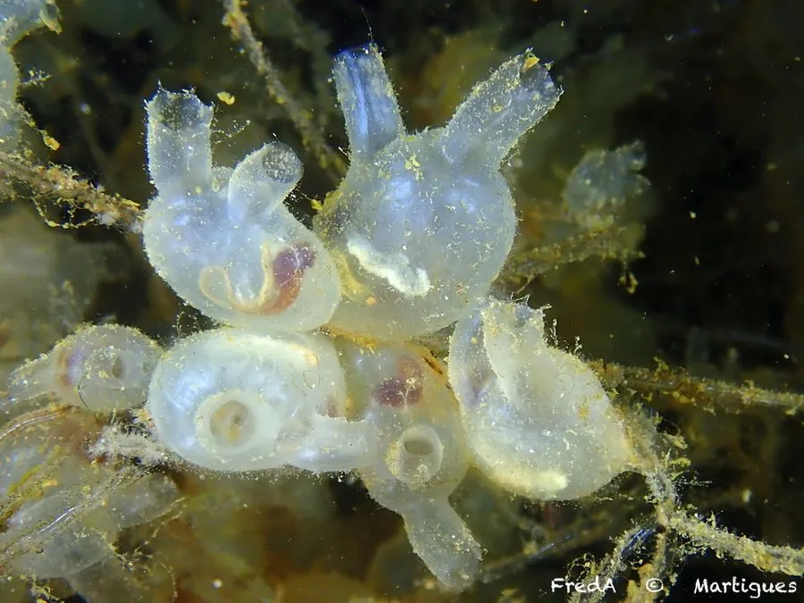

其他无脊椎动物 · 动物界
曼哈顿海鞘 Molgula manhattensis

体呈卵圆、表面粗糙的独居海鞘，原产北美东岸，随船体传播至多地，附着于码头与养殖设施。
- 分类
- 门脊索动物门纲海鞘纲目复鳃目科皮海鞘科属皮海鞘属
- 栖息环境
- 码头、浮标、船底、养殖网箱与浅海硬质基质
- 地理分布
- 原产北美大西洋沿岸，现扩散至欧洲、亚洲与澳大利亚
- 保护级别
- 入侵性污损生物，无保护需求
物种志
曼哈顿海鞘是独居海鞘，体长约二至四厘米，体呈卵圆形或梨形，基部有细柄附着。体壁革质而坚韧，表面粗糙，常粘着沙粒和碎屑，颜色灰褐至暗绿色。顶端有两个孔，一个是入水管，一个是出水管，孔缘有瓣膜，受惊时迅速关闭并喷水，把体内的水排出一小股。
它原产北美大西洋沿岸，从新英格兰到墨西哥湾，随船底附着和压舱水传播到欧洲、亚洲和澳大利亚。它以滤食浮游生物为生，繁殖期释放配子，幼虫浮游数小时后附着。它在码头、浮标、养殖网箱和船底大量附着，是常见的污损生物，会增加设施负担、与养殖贝类争空间，也可能随苗种调运扩散，需通过清污和压舱水管理控制。
形态与习性
- 体长约二至四厘米，卵圆或梨形
- 体壁革质坚韧，表面粗糙常粘沙粒
- 水管顶端两孔，受惊关闭并喷水
- 食性滤食浮游生物
- 扩散船底附着与压舱水传播
- 危害污损设施，与养殖贝类争空间
趣味知识
- 它外面裹着一层像皮革的皮囊，里面其实是一袋过滤海水的结构。
- 被碰一下，它两个水管同时关紧，噗地喷出一股水。
- 它的名字来自纽约曼哈顿，最早就在那一带的码头被采集到。